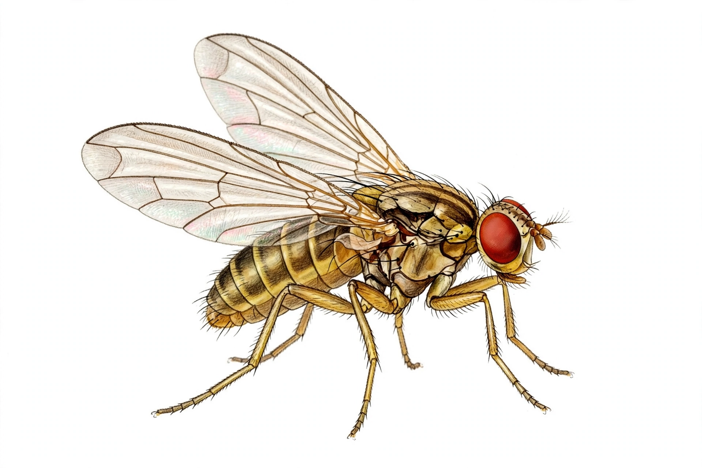

Drosophila melanogaster is a species of fly (order Diptera) known as the common fruit fly or vinegar fly. It is one of the most studied model organisms in biology, used in genetics, developmental biology, neuroscience and evolution since Thomas Hunt Morgan's work in the early 20th century.

| Scientific classification | |
|---|---|
| Kingdom | Animalia |
| Order | Diptera |
| Family | Drosophilidae |
| Genus | Drosophila |
| Species | D. melanogaster |
Females lay eggs on fermenting fruit. Development proceeds through larval instars and a pupal stage; at 25°C the egg-to-adult cycle takes about 8–10 days. Adults live several weeks. Males are distinguished by sex combs and a darker abdomen tip; the species has only four chromosome pairs and giant polytene chromosomes in larval salivary glands.
Morgan's 1910 white-eye mutant demonstrated sex-linked inheritance and chromosomal theory. The genome (~14,000 genes) was sequenced in 2000; roughly 75% of known human disease genes have fly counterparts. Hox genes, circadian rhythm mechanisms (2017 Nobel Prize), innate immunity via Toll, and learning and memory have all been dissected in Drosophila.